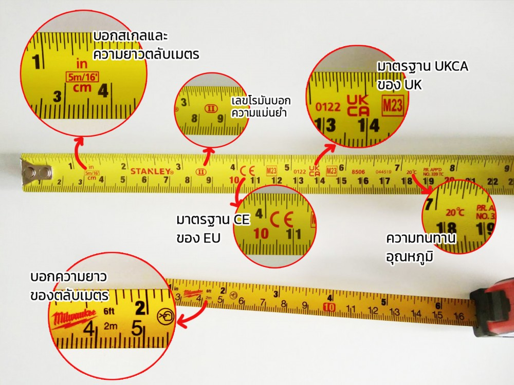
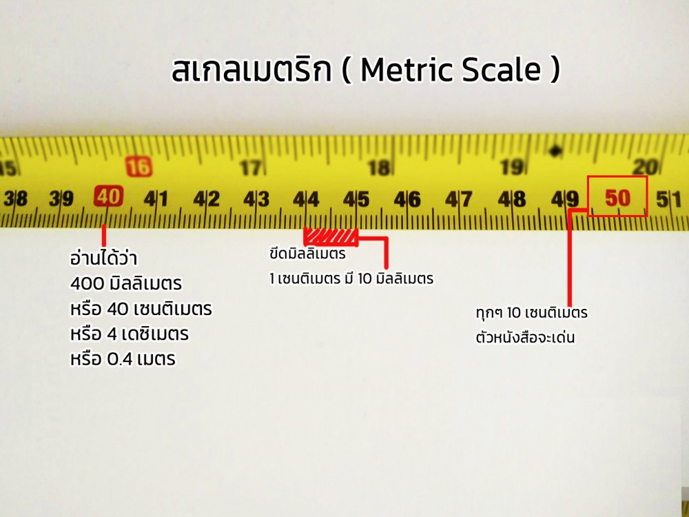
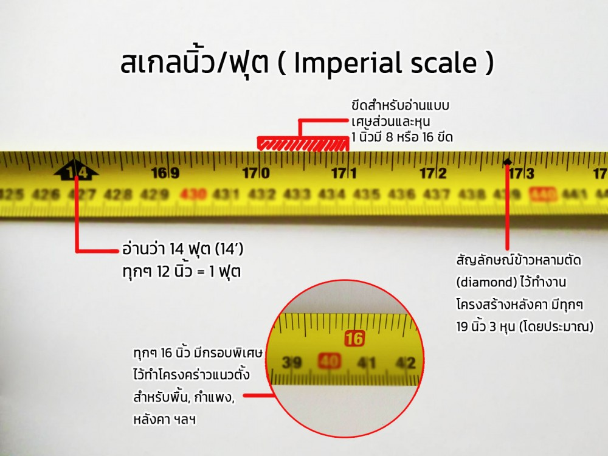

ตลับเมตร หรือที่ ภาษาอังกฤษ เรียกว่า Tape Measures เป็น เครื่องมือวัด แบบเรียบง่ายที่ใช้กันมากที่สุดในโลก เนื่องจากมีความยาวมาก โค้งงอได้ จึงใช้วัดได้หลายสิ่ง เหมาะจะใช้งานอเนกประสงค์โดยไม่ต้องพกเครื่องมือมากมายระหว่างทำงาน
ในหมู่คนมากมายที่ใช้ตลับเมตรเป็นประจำก็ยังมีคนที่ไม่รู้จักวิธีการใช้ ตลับเมตร หรือ การอ่านค่า ที่ถูกต้องอยู่ไม่น้อย ส่วนมากจะอ่านแบบง่ายๆ โดยดูแค่ขีดใหญ่ๆ เป็นหลัก ตลับเมตรเป็นเครื่องมือที่ใช้สำหรับวัดระยะทางหรือความยาว โดยปกติจะประกอบด้วยริบบิ้นหรือแถบวัสดุที่ยืดหยุ่นได้ เช่น โลหะหรือพลาสติก
ทำเครื่องหมายด้วยหน่วยวัดเป็นนิ้วหรือเซนติเมตร ตลับเมตรสามารถม้วนขึ้นหรือขดเพื่อจัดเก็บได้ และโดยทั่วไปจะมีกลไกล็อคเพื่อยึดเทปให้อยู่กับที่เมื่อมีการวัดค่าแล้ว ประเภทของตลับเมตรที่พบมากที่สุดคือแบบยืดหดได้ ซึ่งหมายความว่าสามารถดึงเทปออกและหดกลับเข้าไปในปลอกได้ ตลับเมตรมีความยาว ความกว้าง
และวัสดุต่างๆ กัน และสามารถนำมาใช้เพื่อวัตถุประสงค์ต่างๆ มากมาย รวมถึงงานช่างไม้ งานเย็บผ้า และงานหัตถกรรม
ตลับเมตร หรือที่ ภาษาอังกฤษ เรียกว่า Tape Measures เป็น เครื่องมือวัด แบบเรียบง่ายที่ใช้กันมากที่สุดในโลก เนื่องจากมีความยาวมาก โค้งงอได้ จึงใช้วัดได้หลายสิ่ง เหมาะจะใช้งานอเนกประสงค์โดยไม่ต้องพกเครื่องมือมากมายระหว่างทำงาน
ในหมู่คนมากมายที่ใช้ตลับเมตรเป็นประจำก็ยังมีคนที่ไม่รู้จักวิธีการใช้ ตลับเมตร หรือ การอ่านค่า ที่ถูกต้องอยู่ไม่น้อย ส่วนมากจะอ่านแบบง่ายๆ โดยดูแค่ขีดใหญ่ๆ เป็นหลัก ตลับเมตรเป็นเครื่องมือที่ใช้สำหรับวัดระยะทางหรือความยาว โดยปกติจะประกอบด้วยริบบิ้นหรือแถบวัสดุที่ยืดหยุ่นได้ เช่น โลหะหรือพลาสติก
ทำเครื่องหมายด้วยหน่วยวัดเป็นนิ้วหรือเซนติเมตร ตลับเมตรสามารถม้วนขึ้นหรือขดเพื่อจัดเก็บได้ และโดยทั่วไปจะมีกลไกล็อคเพื่อยึดเทปให้อยู่กับที่เมื่อมีการวัดค่าแล้ว ประเภทของตลับเมตรที่พบมากที่สุดคือแบบยืดหดได้ ซึ่งหมายความว่าสามารถดึงเทปออกและหดกลับเข้าไปในปลอกได้ ตลับเมตรมีความยาว ความกว้าง
และวัสดุต่างๆ กัน และสามารถนำมาใช้เพื่อวัตถุประสงค์ต่างๆ มากมาย รวมถึงงานช่างไม้ งานเย็บผ้า และงานหัตถกรรม
เครื่องหมายบนตลับเมตร
วิธีการใช้ตลับเมตร
วิธีบำรุงรักษาตลับเมตร
เครื่องหมายบนตลับเมตร
ก่อนอื่นต้องรู้จักเครื่องหมายต่างๆ ที่อยู่บนแถบวัดก่อน พวกมันไม่ได้มีไว้เพื่อการค้าหรือเหตุผลอื่นๆ แต่มีเพื่อหลักการอ่านที่ถูกต้อง ถ้ารู้จักพวกมันก็จะช่วยให้อ่านค่าได้ง่าย สะดวก คล่องแคล่ว โดย ตลับเมตร จะมีหน่วยหรือมาตรวัดในการอ่าน 2 แบบด้วยกัน คือ เมตริก (Metric scale) และ นิ้ว (Imperial scale)
ในแต่ละประเทศจะใช้หน่วยวัดไม่เหมือนกัน เช่น อังกฤษ หรือ สหราชอาณาจักรและยุโรปส่วนมาก จะใช้ระบบการวัดแบบเมตริก ในขณะที่ประเทศญี่ปุ่น อเมริกา หรือ อิตาลี จะใช้หน่วยวัดเป็นนิ้ว แต่ก็มีอีกหลายประเทศที่ใช้ทั้งสองหน่วย ประเทศไทยเป็นหนึ่งในนั้น ดังนั้น การที่บน ตลับเมตร มีมาตรวัด 2 แบบจึงสะดวกต่อการใช้งานอย่างมาก
1.เครื่องหมายทั่วไป
- ถัดไปจากอักษรบอกมาตรวัด จะเป็นตัวเลขที่ระบุความยาวทั้งหมดที่สามารถวัดได้ เช่น 6ft/2m โดยจะระบุไว้ทั้งหน่วยเมตริกและหน่วยนิ้ว
- เลขโรมัน (I,II,III) จะบอกความแม่นยำในการวัดของ ตลับเมตร นั้นๆ จากมากที่สุด (I) ไปน้อยที่สุด (III) โดยที่ ตลับเมตร ทั่วไปจะมีความแม่นยำระดับ II
- CE หรือเครื่องหมายรับรองคุณภาพมาตรฐานยุโรป แสดงว่าผ่านการทดสอบด้านความปลอดภัยและอื่นๆ สามารถจำหน่ายในเขตเศรษฐกิจยุโรป และนำเข้าหรือส่งออกได้อย่างถูกกฎหมาย มาจากภาษาฝรั่งเศษ “Conformite Europeene”
- UKCA เป็นมาตรฐานที่ต้องมีหากจะจำหน่ายสินค้าบางประเภทในสหราชอาณาจักร มีผลบังคับใช้ตั้งแต่ปี 2023 เป็นต้นไป เครื่องหมาย CE ยังใช้ได้ในทวีปยุโรปประเทศอื่นๆ แต่ไม่เป็นที่ยอมรับในสหราชอาณาจักรแล้ว ดังนั้นสินค้าจึงควรมีทั้งเครื่องหมาย CE และ UKCA
- ตัวเลขระบุองศาที่ ตลับเมตร นั้นๆ สามารถทนทานได้

2.เครื่องหมายบนหน่วยเมตริก (Metric scale) และวิธีอ่าน
-หน่วยเมตริก คือสเกลบน ตลับเมตร ด้านที่มีหน่วยหลักเป็นเซนติเมตร โดยจะมีตัวอักษร ‘cm’ กำกับไว้ใกล้ๆ กับตะขอเกี่ยว หรือระหว่างหน่วยที่ 3-4 เซนติเมตร เพื่อให้สังเกตได้ทันทีตั้งแต่เริ่มใช้งาน
-ในแต่ละเซนติเมตรจะมีขีดเล็กๆ ใช้บอกหน่วยมิลลิเมตร เช่น ขีดเล็กๆ หลังจุดที่ 4 เซนติเมตร หมายถึงความยาว 41 มิลลิเมตร หรือ 4.1 เซนติเมตร นอกจากนี้ยังอ่านได้ว่า 0.041 เมตร ได้ด้วย แล้วแต่ว่าในการวัดนั้นเราใช้หน่วยแบบไหนเป็นหลัก ซึ่งควรจะใช้หน่วยเดียวกันในการวัดแต่ละงาน
-ทุกๆ 10 เซนติเมตร จะแสดงตัวเลขพิเศษกว่าปกติ เช่น อาจใช้สีแดงเพื่อให้มองเห็นง่าย ในขณะที่ตัวเลขอื่นๆ จะมีสีดำ หรือทำแถบสีพิเศษ
-ทุกๆ 100 เซนติเมตร จะมีหมายเลขกำกับไว้อย่างชัดเจน ตลับเมตร บางอันอาจกำกับไว้ว่า '1m' แทน เพื่อบอกว่าความยาว ณ จุดนั้นเท่ากับ 1 เมตร แต่ส่วนใหญ่จะแสดง '100cm' มากกว่า เพื่อกันสับสน เพราะปกติคนจะรู้กันดีอยู่แล้วว่า 100 เซนติเมตร = 1 เมตร

3.เครื่องหมายบนหน่วยนิ้ว (Imperial scale) และวิธีอ่าน
-มาตรวัดแบบนิ้วเป็นการเรียกให้ทุกคนเข้าใจง่าย แต่จริงๆ มันอ่านได้ทั้งหน่วยนิ้ว หน่วยหุน และหน่วยฟุต
-มีอักษร ‘inch’ หรือ ‘in’ อยู่ที่ด้านตรงข้ามของอักษร ‘cm’ ในหน่วยเมตริก มีวัตถุประสงค์เพื่อบอกชนิดมาตรวัดเช่นกัน
-ระยะห่างแต่ละนิ้วจะมีขีดเล็กๆ จำนวนมาก (ไม่นับขีดหลักที่ยาวที่สุด) บางอันอาจมีแค่ 7 ขีด บางอันอาจมี 15 ขีด หรือที่ละเอียดมากๆ ก็จะมีถึง 31 ขีด ซึ่งมีไว้เพื่ออ่านค่าแบบเศษส่วน เช่น จุดกึ่งกลางระหว่างค่านิ้วจะเท่ากับ ½ ขีดที่เหลือก็ให้ซอยย่อยออกไป เช่น ¾ หรือ ⅞ โดยขีดเหล่านี้จะแบ่งเป็น 8 ส่วนได้ลงตัวเสมอ (เมื่อนับรวมขีดหลัก) ดังนั้นจึงอ่านเป็นหน่วยหุนได้ โดยที่ 8 หุน = 1 นิ้ว
-ระยะ 12 นิ้ว = 1 ฟุต แต่ละฟุตจะมีสัญลักษณ์หรืออักษรบอกไว้เพื่อให้มองเห็นได้ชัดเจน ช่วยให้วัดได้สะดวก ง่าย
-ทุกๆ 16 นิ้ว จะมีสัญลักษณ์พิเศษหรือตัวเลขที่มีรูปแบบสะดุดตา แตกต่างจากค่าอื่นๆ มีไว้สำหรับการวางคร่าว (โครงเคร่า) แนวตั้ง เป็นประโยชน์มากสำหรับช่างไม้ เพื่อให้ได้ระยะห่างที่พอดี ไม่แคบหรือกว้างเกินไป อีกทั้งยังเท่ากับขนาดมาตรฐานของแผ่นไม้ด้วย เช่น แผ่นไม้ 48*96 นิ้ว เป็นต้น
-ทุกระยะ 19 นิ้วนิดๆ จะมีจุดข้าวหลามตัด (Diamond) ซึ่งเป็นประโยชน์กับช่างก่อสร้างที่ต้องวางระยะห่างโครงสร้างหลังคา

Back to top
วิธีการใช้ตลับเมตร
1.ดึงปลายเทปหรือสายวัดออกจากตลับ
2.นำส่วนที่เป็นตะขอไปเกี่ยวที่วัตถุหรือชิ้นงานที่ต้องการวัดขนาดหรือตรวจสอบความถูกต้องได้ทันที
3.เมื่อได้ขนาดหรือระยะที่ต้องการแล้วให้ทำเครื่องหมายเพื่อง่ายต่อการอ่านค่าหรือการกำหนดตำแหน่ง
4.หากต้องการวัดขนาดเดิมซ้ำๆ ให้ยึดเทปหรือสายวัดด้วยการเลื่อนปุ่มล็อกบนตลับเมตร
5.หลังใช้งานเสร็จแล้วให้ปลดล็อกและจัดเก็บเทปโลหะหรือสายวัดเข้าตลับให้เรียบร้อย หากเป็นเทปโลหะให้ค่อยๆ ผ่อนแรงไม่ให้เทปดึงกลับเข้าตลับเร็วเกินไป เพื่อป้องกันการชำรุดเสียหายหรือสายบิดเบี้ยวได้
Back to top
วิธีบำรุงรักษาตลับเมตร
1.เมื่อใช้งานเสร็จให้เช็ดทำความสะอาดทุกครั้งและชโลมน้ำมันตรงชิ้นส่วนที่เป็นโลหะ เพื่อป้องกันการเกิดสนิมและยืดอายุการใช้งานให้กับอุปกรณ์ได้ดี
2.ก่อนและหลังการใช้งานต้องตรวจสภาพตลับเมตรทุกครั้ง
3.หลีกเลี่ยงการใช้งานผิดวิธีและระมัดระวังของแข็งหรือของมีคมขูดบนหน่วยวัด เพราะอาจทำให้หน่วยวัดเลือนหายและส่งผลให้ค่าการวัดผิดพลาดได้
4.ควรจัดเก็บตลับเมตรเข้าที่ให้เป็นระเบียบและพ้นจากพื้นที่ที่มีความร้อนสูง เพราะอาจทำให้เสื่อมสภาพเร็วขึ้นและอายุการใช้งานลดลงได้
Back to top
แหล่งที่มา : https://itoolmart.com/blog/content/7dlcr
แหล่งที่มา : https://www.monet.asia/type-of-measuring-tape/